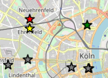
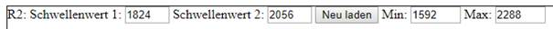
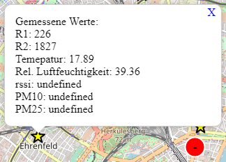
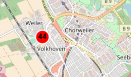
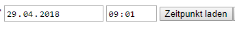

Die Zertifikat der verwendeten TH API ist abgelaufen. Bitte über diesen Link die Webseite aufrufen und einen Zugriff erlauben.
Die Messwerte der Sensoren des OpenAir Cologne Projektes werden auf der Karte als Sternchen dargestellt.
Die gemessenen Widerstandswerte R1 und R2 bilden nicht die Stickstoffoxide in der üblichen Einheit Mikrogramm pro Kubikmeter Luft ab, sondern die Messwerte an den Sensoren. Es müssen erst noch Wege gefunden werden diese entsprechende umzurechnen.
Auch die Werte von Temperatur und Luftfeuchtigkeit spiegeln nicht die realen Werte wieder, da die durch den Sensor verursachte Hitze die Ergebnisse verfälscht. Für alle vier Messwerte können die Schwellenwerte selbst angepasst werden.
Eine Aktualisierung der Karte mit den angepassten Schwellenwerten erfolgt mittels des Anklickens des Buttons „Neu laden“. Bei der Initialisierung der Karte werden die Schwellenwerte rein mathematisch ermittelt und stellen keine fachliche Bewertung dar.
Die Daten können über eine API der TH Köln abgefragt werden und stehen unter der ??? Lizenz. Eine Dokumentation zur API sind hier zu finden.
Durch Anklicken der Messstationen werden die gemessenen Werte in einem Fenster dargestellt:
Die Stickstoffdioxid (NO2) Werte des Landesamt für Natur, Umwelt und Verbraucherschutz Nordrhein-Westfalen (LANUV) werden als Kreise mit Beschriftung des Messwertes angezeigt.
Die Daten stellen die stündlich bestimmten Mittelwerte in der Einheit Mikrogramm pro Kubikmeter Luft dar. Die Daten stehen über das OpenGeodata NRW Download Portal unter der Datenlizenz Deutschland Namensnennung 2.0 bereit.
Leider werden bisher nur die Daten der Messstation Köln Clevischer Ring dargestellt. Wir sind daran am Arbeiten die während des OpenDataDays 2018 entstandene API zur Aufbereitung der LANUV Daten anzupassen.
Da die Daten des LANUV nicht tagesaktuell sind, initialisiert sich die Karte mit dem aktuellen Zeitstempel minus 2 Tagen.
Der Zeitstempel kann angepasst werden und die Karte wird nach Anklicken des Buttons „Zeitpunkt laden“ entsprechend aktualisiert. Hier ist zu beachten, dass zukünftige Zeitstempel auf den aktuellen Zeitstempel gesetzt werden.